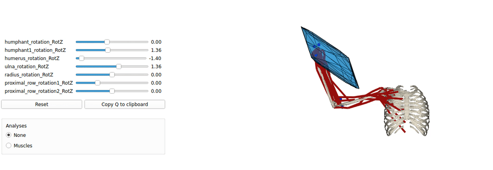
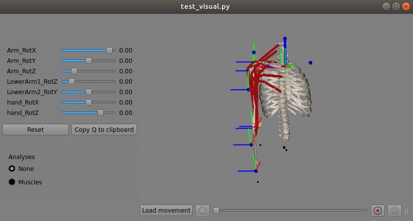

Pyomeca examples


A colleciton of simple examples codes for simpler starting with pyomeca solftware, particularly wiht biorbd and bioviz
This is an example tutorial of how to setup biorbd and bioviz with pycapacity to calcualte and visualise the human capacities

Installing Pyomeca biorbd and bioviz
the best way to download and install the pyomeca biordb and bioviz libraries is to use anaconda.
For anaconda install you can simply download the yaml file and save it as env.yaml:
name: pyomeca
channels:
- conda-forge
- default
dependencies:
- python=3.9
- bioviz
- biorbd
- jupyter
- pip
- pip:
- pycapacity
And create a new ready to go environment:
conda env create -f env.yaml # create the new environemnt and install biorbd,bioviz
conda activate pyomeca
Creating the custom environment from scratch
You can also simply use anaconda to create a new custom environment:
conda create -n pyomeca python=3 # create python 3 based environment
conda activate pyomeca # activate the environment
conda install biorbd bioviz # install biorbd and bioviz
Then install pycapacity for the workspace analysis
pip install pycapacity
Downloading musculoskeletal models
you can use any pyomeca .bioMod model, however to jump-start the development we suggest you to download our small database of models at the link
You can download it using terminal:
git clone https://gitlab.inria.fr/auctus-team/components/modelisation/humanmodels/pyomeca_models.git
Or downloading the zip from the link https://gitlab.inria.fr/auctus-team/components/modelisation/humanmodels/pyomeca_models
Make sure to place the pyomeca_models folder in the directory that will contain your python code.
Visualise models code example
A simple example of a python code visualising the mucsuloskeletal models. by launching this code you should be able to make sure that your installation works well.
import bioviz
import biorbd
import numpy as np
# Load a predefined model
# model = biorbd.Model("pyomeca_models/MOBL_ARMS_fixed_33.bioMod")
# model = biorbd.Model("pyomeca_models/BrasComplet.bioMod")
# model = biorbd.Model("pyomeca_models/BrasViolon.bioMod")
# model = biorbd.Model("pyomeca_models/arm26.bioMod")
model = biorbd.Model("pyomeca_models/BrasCompletIMUS.bioMod")
# get some random data
nq = model.nbQ()
nb_mus = model.nbMuscles()
print("dof number: ",nq)
print("muscle number: ",nb_mus)
# a bit of animation
q_recons = np.zeros((model.nbQ(), 100))
for i in range(1,100):
# increment all joint values by -0.003
q_recons[:, i] = q_recons[:, i-1]-0.003
# double duration of the animation
q_recons = np.hstack((q_recons,np.flip(q_recons)))
# visualize
b = bioviz.Viz(loaded_model=model)
# b.load_movement(q_recons)
b.exec()

Interactive force polytope code example
A simple example of a python code visualising the mucsuloskeletal models. by launching this code you should be able to make sure that your installation works well.
import numpy as np
import biorbd
import bioviz
from bioviz.biorbd_vtk import VtkModel, VtkWindow, Mesh
# a bit of statistics
import time
# polytope algorithm
from pycapacity.human import force_polytope
# Load a predefined model
model = biorbd.Model("pyomeca_models/MOBL_ARMS_fixed_33.bioMod")
# get the number of dof and muslces
nq = model.nbQ()
nb_mus = model.nbMuscles()
# Animate the results if biorbd viz is installed
b = bioviz.Viz(loaded_model=model,
background_color=(1,1,1),
show_local_ref_frame=False,
show_global_ref_frame=False,
show_markers=True,
show_global_center_of_mass=False,
show_segments_center_of_mass=False,
show_wrappings=False,
show_floor=False,
show_gravity_vector=False)
# define the meshes for the polytope - without robot
vtkMeshView = VtkModel(b.vtk_window, patch_color=[[0,0.5,0.8]],mesh_opacity=0.5)
vtkMeshView1 = VtkModel(b.vtk_window, patch_color=[[0,0.5,0.8]],mesh_opacity=0.8, force_wireframe=True)
b.set_q([0.0,1.4237,-1.256,1.8218,0.0,0.0,0.0])
while b.vtk_window.is_active:
Q = b.Q
model.updateMuscles(Q, True)
model.UpdateKinematicsCustom(Q, np.zeros(nq), np.zeros(nq))
F_max = []
F_min = []
for i in range(nb_mus):
F_max.append(model.muscle(i).characteristics().forceIsoMax())
#F_min.append(0)
a = biorbd.HillThelenType(model.muscle(i)).FlPE()
if a > 1:
a = 0.1
elif a < 0:
a = 0
F_min.append(a*F_max[-1])
start = time.time()
N = -model.musclesLengthJacobian(Q).to_array().T
J = model.markersJacobian(Q, False, False)[-1].to_array()
print("matrices time", time.time() - start)
# Proceed with the inverse dynamics
Tau_grav = model.InverseDynamics(Q, np.zeros(nq), np.zeros(nq))
start = time.time()
f_poly = force_polytope(J, N, F_min, F_max, 10, -Tau_grav.to_array())
print("polytope time", time.time() - start)
## display polytope in the bioviz
f_vert_show = f_poly.vertices/2000 + model.markers(Q)[model.nbMarkers()-1].to_array()[:,None]
# plot polytope (blue) - with the edges
meshes = []
meshes.append(Mesh(vertex=f_vert_show[:,:,None], triangles=f_poly.face_indices.T))
vtkMeshView.new_mesh_set(meshes)
vtkMeshView1.new_mesh_set(meshes)
# update visualisation
b.update()